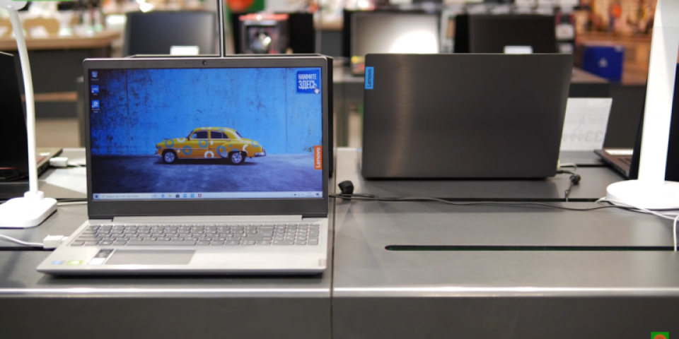
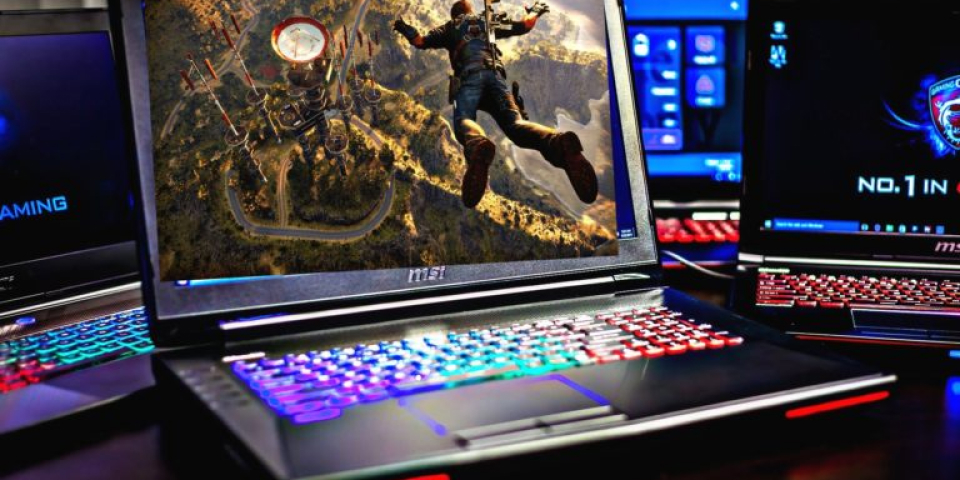
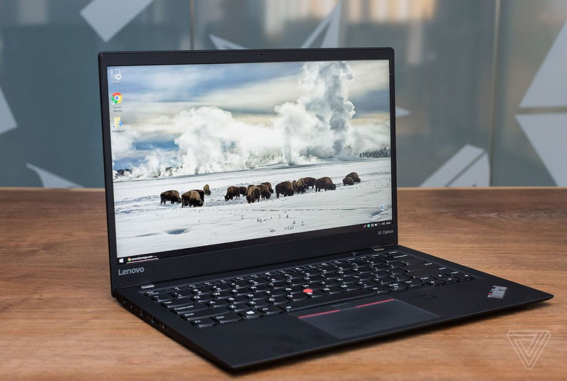

Как выбрать ноутбук 2019 для работы, учёбы, дома
В настольных стационарных компьютерах есть своя романтика. Десктопы легко поддаются апгрейдам, они подключаются к мониторам с широкой диагональю, мы сами сможем выбрать подходящую акустику и так далее. Но, не смотря на все эти привилегии и преимущества, наибольшую популярность в сегменте компьютерных технологий приобрели именно ноутбуки. Произошло это, видимо, из-за их мобильности и более свободной транспортировки.

В настольных стационарных компьютерах есть своя романтика. Десктопы легко поддаются апгрейдам, они подключаются к мониторам с широкой диагональю, мы сами сможем выбрать подходящую акустику и так далее. Но, не смотря на все эти привилегии и преимущества, наибольшую популярность в сегменте компьютерных технологий приобрели именно ноутбуки. Произошло это, видимо, из-за их мобильности и более свободной транспортировки.
Предназначение ноутбука
Перед самим походом в магазин электроники за новеньким ноутбуком, мы должны ответить сами себе на простой вопрос: «Зачем нам нужен ноутбук?». Подразумевается, что мы уже осознаём, что он нам нужен, но вот, что мы будем делать с его помощью. Ведь если мы покупаем компьютер лишь для того, чтобы смотреть на нём видео, набирать текст, пользоваться электронными таблицами и серфить в сети Интернет, то дорогостоящая геймерская машина нам не нужна!

Другое дело, если мы будем играть на ноутбуке в самые современные игры или профессионально заниматься редактированием фотографий и видео, то необходимо рассматривать ноутбук совершенно другого класса. На какие же классы можно условно разделить ноутбуки, в зависимости от их предназначения? Это может быть базовая сборка, ноутбук для учёбы, для работы, для игр и так далее.
Размер ноутбука
Сегодня наиболее распространённым стандартом размеров ноутбука являются устройства с диагональю экрана 15,6ʺ. Стоит чётко понимать, что от размера экрана напрямую будут зависеть габариты ноутбука, но и наоборот – в слишком компактный нетбук уместить экран с широкой диагональю не удастся. Как же понять, насколько большой экран в ноутбуке нам нужен или, наоборот, насколько компактным ноутбук должен быть?

Это решение должно полностью исходить из того, для чего сам ноутбук необходим. Например, если ноутбук понадобится в основном для путешествий и работы в интернете, то наилучшим решением окажется небольшой компактный нетбук с экраном 11-12ʺ. Если же нам нужен ноутбук для игр, то лучше всего выбирать средний ноутбук с диагональю 15,6ʺ, но с соответствующими параметрами производительности и охлаждения. Большой ноутбук с 17-дюймовым экраном может понадобиться, если мы выбираем универсальное устройство для работы, возможно, для обработки графики, фото и редактирования видео.